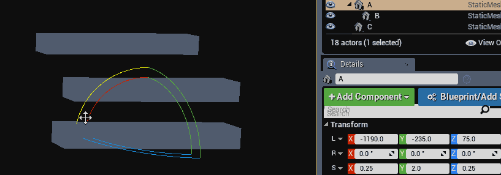

Accumulating Transforms
Instead of accumulating matrices, it's possible to accumulate transforms by combining their rotation / scale / position in the hierarchy directly. This way, instead of finding the matrix of every transform we accumulate the final world transform, then find the matrix of only that world transform. Engines like UE4 and Ogre 3D work this way.
When combining two transforms, a and b both the final position and scale is obtained by directly multiplying the scale and rotation of each transform together. The final position is obtained by scaling the position of b by the scale of a, then rotating that point by the rotation of a and adding the result to the position of a. The following code demonstrates how to do this:
// a = parent transform, b = child (or current) transform
Transform CombineTransforms(Transform a, Transform b) {
Transform out;
out.scale = a.scale * b.scale; // vec3 * vec3, parent scale times child scale
out.rotation = b.rotation * a.rotation; // quat * quat, Quaternions multiply in reverse, this is parent times child
// parent scale times child position, rotated by parent rotation:
out.position = (a.scale * b.position) * a.rotation; // (vec3 * vec3) * quat, quaternions multiply in reverse
out.position = a.position + out.position; // ve3 + vec3, combine positions
return out;
}
To use the above code in a hierarchy, the first argument (a) should be the parent transform and the second argument (b) should be the child transform. The code below shows how you can accumulate all transforms in a hierarchy and create a world matrix from the final combined transform.
Transform GetWorldTransform(Transform transform) {
Transform worldTransform = transform; // This is acopy, not a reference
if (transform.parent != NULL) {
Transform worldParent = GetWorldTransform(transform.parent);
// Accumulate scale, Vector * Vector
worldTransform.scale = worldParent.scale * worldTransform.scale;
// Accumulate rotation, Quaternion * Quaternion
// Remember, quaternions multiply in reverse order! So:
// parent times child is written as: child * parent
worldTransform.rotation = worldTransform.rotation * worldParent.rotation;
// Accumulate position: scale first, Vector * vector
worldTransform.position = worldParent.scale * worldTransform.position;
// Accumulate position: rotate next, vector * Quaternion (quats rotate right to left)
worldTransform.position = worldTransform.position * worldParent.rotation;
// Accumulate position: transform last, Vector + Vector
worldTransform.position = worldParent.position + worldTransform.position;
}
return worldTransform;
}
Matrix GetWorldMatrix(Transform transform) {
Transform worldSpaceTransform = GetWorldTransform(transform);
return ToMatrix(worldSpaceTransform);
}
Accumulating transformations this way does not suffer from the same skewing artifact that accumulating matrices does. The below gif shows the rotation of game objects where one of them does not have a uniform scaled parent. The skew artifact is not present.
Even tough the skewing artifact was fixed, a new artifact was introduced. You may notice from the above code that all scaling is accumulated in the same space. This prevents the final matrix from having a non-orthogonal basis (no skew is introduced), but scaling happens along the local axis of the transform, not relative to its parent like we would expect.
The interactive example below shows this artifact. The basis vectors of the world are rendered in by red / green / blue rods. You can affect the scale of the piston with the sliderbar, notice how the "Accumulate Matrices" option looks more natural (because it scales length along the x axis as expected).
The cylinders in the above demo are oriented to the z axis. The piston looking object is made up of the following hierarchy (values are updated live with slider):
- Root Transform (not visible)
- position: (2.50, 3.00, 3.00)
- rotation: (1.00, 0.00, 0.00, 0.00)
- scale: (1.00, 1.00, 1.00)
-
- Transform A (magenta cylinder)
- position: (0.00, 0.00, 1.50)
- rotation: (0.71, 0.00, 0.71, 0.00)
- scale: (0.25, 0.25, 2.00)
-
- Transform B (cyan cylinder)
- position: (0.00, 0.00, 0.50)
- rotation: (1.00, 0.00, 0.00, 0.00)
- scale: (4.00, 4.00, 0.50)